Experience
Mercatus Technologies Inc
Jan 2024 to Oct 2026
Senior QA Automation Engineer, Mar 2026 to Oct 2026. Pre-Senior QA Automation Engineer, Mar 2024 to Mar 2026, promoted after probation. QC Engineer (probation), Jan to Mar 2024.
Grocery e-commerce platform, developed in an Agile environment. Web test suites for Southeastern Grocers (Winn-Dixie, Harveys), Stater Bros. Markets, Weis Markets, WinCo Foods, Buehler's and Piggly Wiggly. Mobile test suites for Stater Bros. Markets, Weis Markets, Big Y, Buehler's and Vallarta Supermarkets.
FPT Software Ho Chi Minh
Aug 2023 to Dec 2023
Tester. Outsourcing project that modernised an application for a Japanese printing company. Full testing cycle to the client's standards.
Hung Thai Technology Company
Jul 2021 to Jul 2023
QC Engineer. Web and mobile apps for residents of Phu My Hung: bill payments through the MoMo e-wallet and Payoo card payments, and a coupon loyalty system. Agile team.
Education and courses
BSc in Software Engineering, Ton Duc Thang University, 2018 to 2022.
Full Stack Open (University of Helsinki). Google Project Management and Google Data Analytics (Coursera). Selenium with Java and Cucumber (Udemy).
Languages
English, IELTS Academic 7.0 (CEFR C1). Vietnamese, native.
Test automation for iOS, Android and web
Result. 300+ regression test cases automated per retailer. While a retailer's suite was being built, a regression round needed 5 to 6 testers. Once the suite was ready it needed 2 to 3, and they spend their time on what automation should not cover: third-party integrations such as social sign-in, and visual checks.

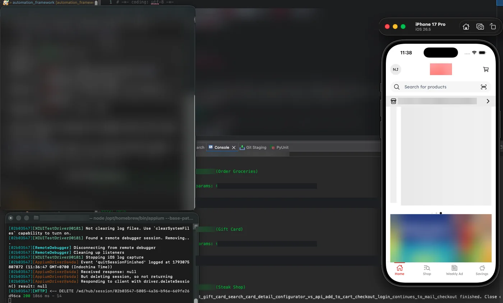
At Mercatus Technologies I tested a grocery e-commerce platform used by 8 US retailers. The platform is white-label: a base product holds every feature, and each retailer gets its own version with the look and the features it asked for.
I inherited the Selenium web framework with part of the tests for the base product. I maintained it, extended it as the base product gained features, and wrote the tests for the retailers' versions, on Chrome, Firefox and Safari. When my work moved to mobile, I built the Appium framework on top of it, for iOS and Android. The apps are hybrid, so the tests switch between the webview and native screens.
I wrote the automated tests for the retailers' versions myself, on web and on mobile. They are end-to-end (E2E) tests, and each one follows a test case written by me or by a manual tester.
Tools. Python, pytest, pytest-xdist, Appium (XCUITest, UiAutomator2), Selenium, Xcode simulators, Android emulators and real devices

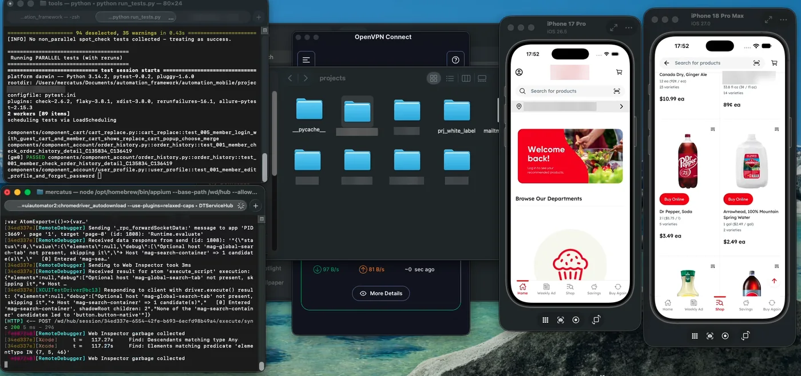

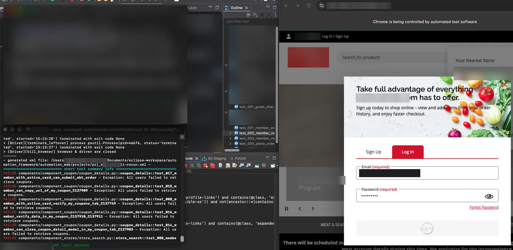
Field note
A hybrid app is two apps in one: a native shell with a website inside it. The test tool treats them as separate worlds and can look in only one at a time, so a correct locator finds nothing when the test is in the wrong one. On one white-label iOS app the web side did not appear at all until I changed one setting in the test setup. The same framework had worked on the base app the day before.
Framework design and test reliability
Result. The suite went from 489 fixed pauses to 177, and one iOS test went from 156.7 seconds to about 77.
The framework follows the Page Object Model (POM), in four layers. A test reads like a user story. A container creates the component classes and hands them to the test. The components are the page objects, and each one keeps its own selectors. Every click, wait and context switch goes through one navigation core. Each retailer is a small project that inherits from the base project and overrides only what differs, with no copied files.
One bug in detail: the click that reported success and did nothing
Symptom. Buttons inside the app's web components highlighted when clicked, and nothing happened. A JavaScript click as a fallback seemed to fix it. Then other tests started to fail in a new way: a quantity went up by two, and a checkbox ended up where it started.
Cause. The app is built from custom elements with nested shadow DOM. In a webview the driver does not send a real tap. It runs a script that creates the click event, and that event is not composed, which means it stops at the shadow boundary and never reaches the handler on the outer element. The JavaScript click is composed, so it does arrive. The check that decided whether the first click had worked could not see inside nested shadow roots, so it reported a miss when the click had landed, and the fallback clicked again.
Fix. I changed the core, not the tests. A click is now one click on the element itself, and a listener on the document confirms that it escaped the shadow root. For controls that change again on a second click (checkboxes, steppers, buttons that open a dialog), the helper reads the state, clicks once, and waits for the state the test asked for. For anything that is saved, the test also checks the API, because the screen can show a checked box while the server says false.
Waits, retries and long tests
- I replaced fixed pauses with waits for a real state. The 177 that remain sit in loops that check again anyway, where a short pause costs less than another round trip to the device.
- A failing test is rerun once immediately, then once more in isolation, then it is reported: three runs at most. A test that fails because of a known app bug stays red, with the bug written in the test.
- I split a 27-minute checkout test into three independent tests of 12 to 15 minutes. The total is longer. The gain is that a failure now costs a rerun of one part, and each part reports its own cause.
Tools. Python, pytest, pytest-check, pytest-rerunfailures, Allure, Appium, Selenium
Field note
The biggest single speed gain came from one setting. With a 10-second implicit wait, every check for an element that was already gone blocked for the full 10 seconds. The sign was in the log: every miss took between 10.0 and 10.6 seconds. I set the implicit wait to 0 and used explicit waits everywhere.
AI-assisted testing with coding agents
Result. A new retailer's test suite became stable in 1 week, where it used to take about a month. Stable means that every test without a known failure passed in the regression build.
My employer asked its engineers to use AI to work more efficiently. I work with an AI coding agent, Claude Code, every day, across the whole test cycle and not only to write code:
- Test automation. Writing page objects and tests to the framework's standards, and finding the cause of flaky tests from the logs.
- API and data. Through Playwright MCP the agent opens a page for me, so I can trace which API calls a screen makes, see how the page is built, and check the data behind it.
- Performance. Reading load test and profiling reports, and working out what each metric means for the user.
- SEO and accessibility. I wrote my SEO crawler script and my accessibility report generator with AI assistance.
- Reports. Drafting test reports and handover documents, which I then check and correct.
The agent is fast, so the control around it matters more than the prompt. I wrote rule files and hooks that hold its output to the framework's standards, I keep a written playbook of working rules, and I read the diff of every change before it is pushed.
I also trialled a shared local model: LM Studio on a Mac mini, holding one knowledge base of product testing that teammates could reach from their laptops without hosting a large model themselves. It did not go into regular use.
Tools. Claude Code, custom rules and hooks, Model Context Protocol (MCP) servers such as Playwright MCP, LM Studio
Field note
An AI agent solves the problem in front of it, not the one you have next month. More than once mine got past a hard step with a block of raw JavaScript. It worked that day, and nobody could have maintained it. I pointed it back to the framework's own functions. The rule files exist for cases like this.
API testing
Finding. A 44-case retest of sign-up email validation showed that the UAT environment was stricter than staging and rejected real addresses, such as names with a hyphen. I reported it for a product decision, with the table of cases.
I test REST APIs by hand in Postman first, then turn the checks into automated ones. I built the framework's API client for this. Tests create their own accounts, carts and addresses through the API, and drive only the behaviour under test through the screen. Money shown in the app is compared with the API's summary, not scraped number by number.
Tools. Postman, Python, pytest, REST

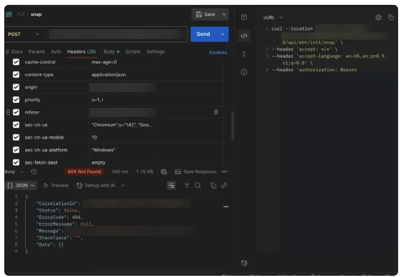
Field note
In an early load test run, every login returned HTTP 200 and the failure rate showed 0%. The body said the username or password was incorrect. Only a check on the body's success flag caught it, so now every request asserts both the status and the flag.
CI/CD and reporting
Result. One regression build ran 211 test functions in 84 minutes with no failures. A test function can cover several related test cases on the same flow, which saves run time.
I built the regression plan on Atlassian Bamboo, the team's continuous integration (CI/CD) server, and my suites ran in it in stages: cleanup, setup, parallel test jobs per feature area, a rerun of failures, an upload to the test management tool, and an Allure report. A failure in the report links to its ticket, so the next person can see whether it is new or already known. Bamboo is the only CI server I have used. Its building blocks (stages, parallel jobs, a rerun step, a published report) also exist in Jenkins, GitHub Actions and GitLab CI.
Tools. Bamboo, Bitbucket, Git, Allure, TestRail, Jira

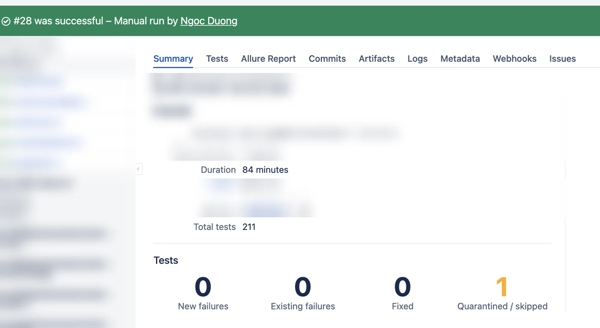

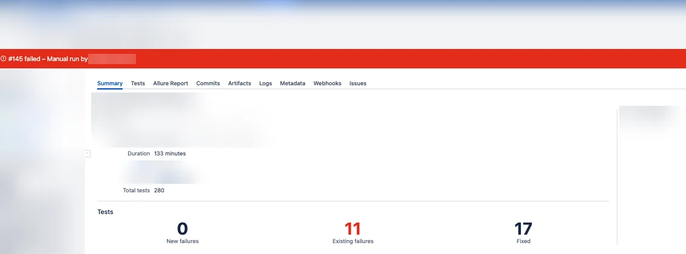

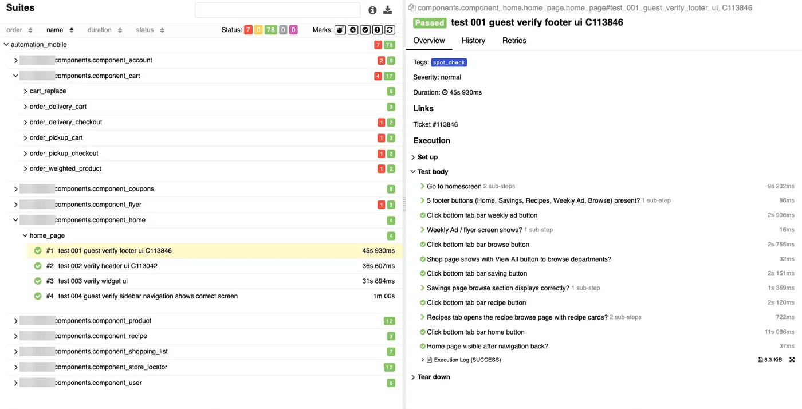
Field note
A rerun is not a fix. My runner once had a second, parallel retry between the first rerun and the final one. It mostly ran the same failures again and made the build slower, so I removed it. A test now runs three times at most.
Performance and load testing
What it gives the team. "The app feels slow" becomes a number with a pass or fail line on it, and a slow frame becomes a named step in a named test.
With my team I worked on k6 load tests that replay a 21-step shopper journey against the platform's API, from sign-in to checkout and order history, across 4 retailers and 3 environments. I ran the production tests. They were authorised by the platform manager, and their figures stay with the company.
For Android I built a runner that wraps the test suite and profiles the app one test at a time with Flashlight: frame rate, CPU and memory, matched to the test step that was running.
Tools. k6, JavaScript, Flashlight, Python, pytest

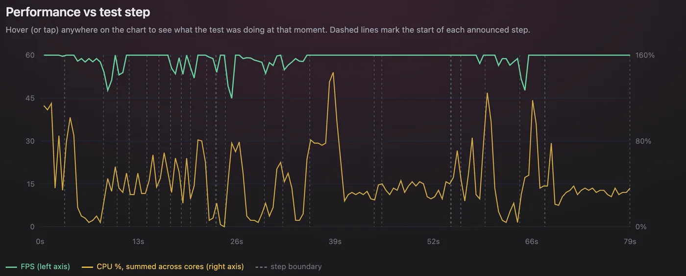

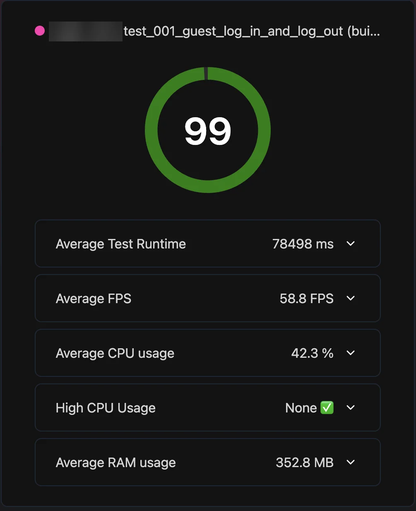
Field note
People notice delay at three fixed points: about 0.1 seconds feels instant, about 1 second keeps their train of thought, and about 10 seconds loses their attention. In one of my test runs the slowest 5% of calls took just over 1 second, so about 1 call in 20 crossed the 1-second limit. An average would have hidden that.
Security testing
Many real security bugs are not clever hacks. They happen when the server trusts what the app tells it. So I check that the server, not the app, enforces the rules. I put a proxy between the app and the server, edit a request or a response on its way, and see whether the system still refuses what it should refuse. I did this for payments and for one-time passcodes, on my employer's own platform, as part of release testing and its PCI-DSS v4 certification work.
Editing traffic is one check among many. Some of the checks I run:
- Broken access control. Can one user reach another user's data?
- Session handling. Does a token stop working after logout?
- Rate limiting. Can an endpoint be called again and again with no limit?
- File upload. Are dangerous file types refused?
- Race conditions. Do requests sent at the same moment break a rule, such as uniqueness or single use?
- Injection. SQL injection and cross-site scripting (XSS).
When a defect is fixed, I test it again to confirm that the fix works as expected.
To inspect the Android app's traffic I rooted an emulator and installed the proxy's certificate as a system certificate, then wrote the steps down so the rest of the team could do the same.
Tools. Burp Suite, OWASP ZAP, Postman, Android emulator, Magisk

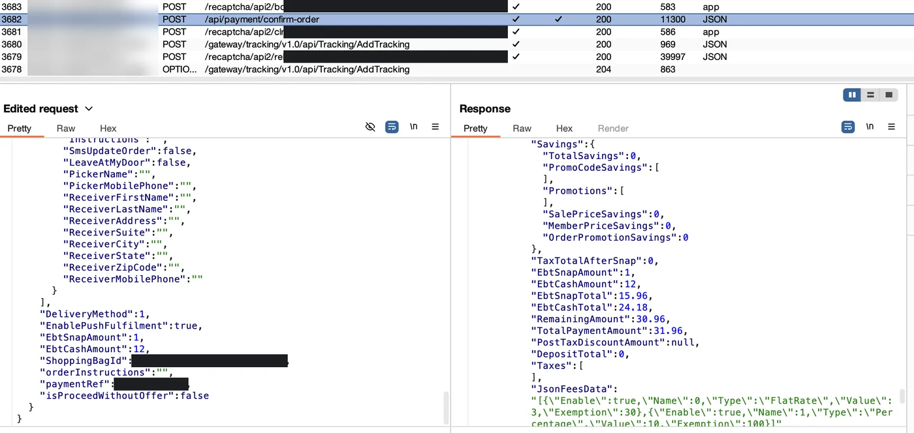

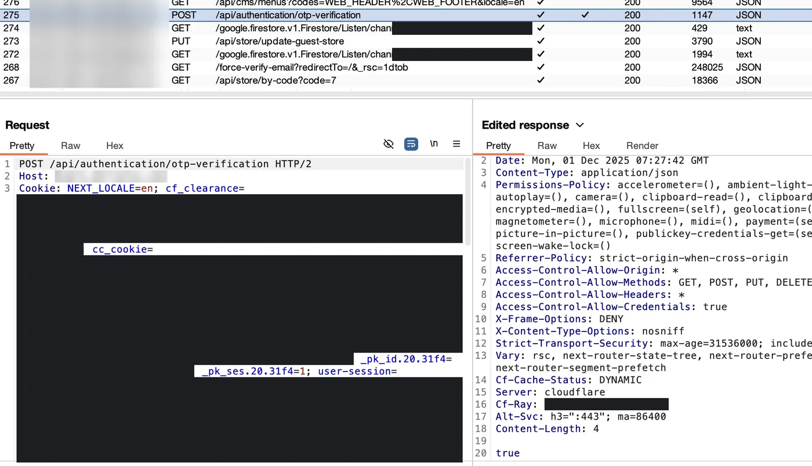
Field note
Since Android 7, an app does not trust a certificate that the user installs unless the app itself opts in. The first time I pointed the app at a proxy, it loaded nothing at all. For a build I could not change, the proxy's certificate had to go into the system store, which on an emulator means rooting it first.
SEO and data checks
Finding. On one retailer's site, product pages looked complete in a browser and were blank to a crawler. The site waited for a location permission to choose a store, and a crawler never grants one. The fix was a default store. I confirmed it with my script and with Google's Rich Results Test, and wrote the audit report.
For search engine optimisation (SEO) checks I wrote a Python script that fetches the raw HTML of a page, with no cookies, no JavaScript and no permissions, and grades only what that first response holds: the head tags, the structured data and the text in the HTML.
For data I query SQL Server and MySQL to prepare test data and to check what is behind the screen.
Tools. Python, requests, BeautifulSoup, Lighthouse, DBeaver, SQL Server, MySQL

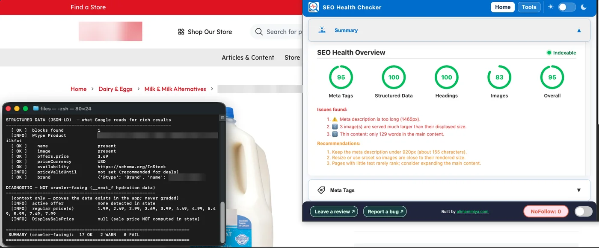

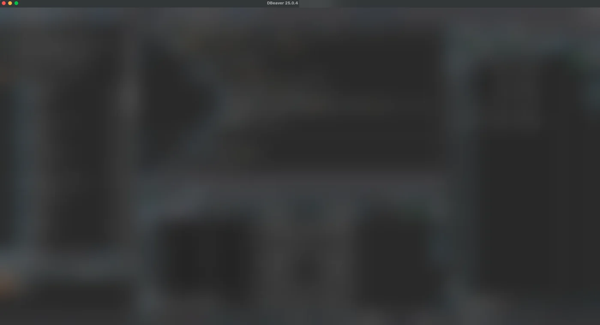
Field note
A page can pass every check you run in your own browser and still be invisible to search. Your browser has cookies, a location and JavaScript. Test the page the way the crawler meets it: cold, with none of them.
Accessibility testing
Result. When accessibility problems were reported on one retailer's site, I reproduced each one, proposed the fix and verified that the fix met the reporter's expectations.
I built an audit test that scans each page with axe against WCAG 2.1 A and AA, in phone, tablet and desktop sizes, and runs Lighthouse as well. It covers the pages a guest can open and the pages behind sign-in, and a page with more than 10 violations fails the run. Then I check by hand with VoiceOver, because a scan finds only some of the problems. In 2017 the UK government tested 10 scanning tools on a page built full of known barriers, the best tool found about 40% of them, and 29% were found by no tool at all. A scan also cannot tell you what a blind user hears first, or whether the order makes sense.
Tools. axe, Lighthouse, VoiceOver, Selenium, Python, pytest, Allure

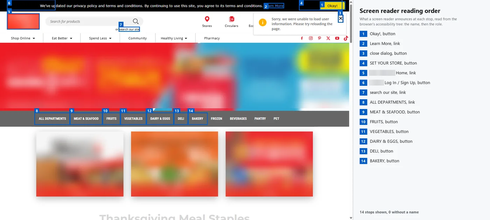

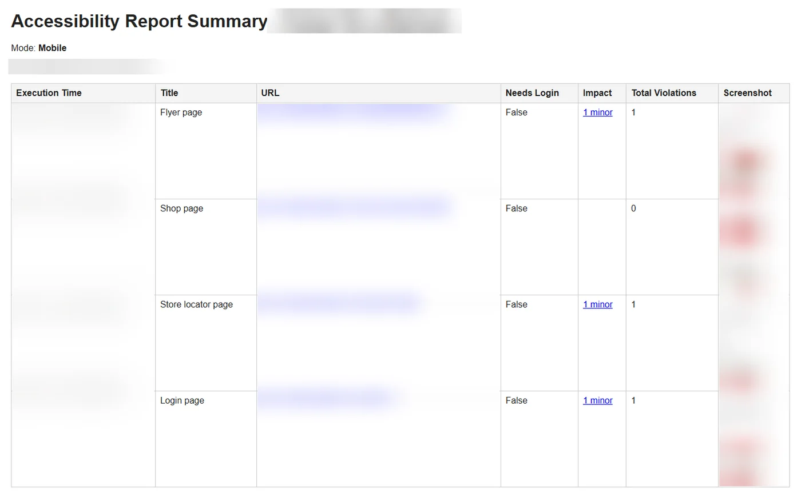
Field note
A cookie banner or an important notice should come first in a screen reader's reading order, wherever it sits on the screen. A banner pinned to the bottom of the page often comes last in the reading order, so a blind user goes through the whole page before hearing about it. For any business that serves the public online, that is a legal risk, not only a usability one. It is why I check the reading order and not only the scan result.
Working with a team
My direction is Quality Assurance (QA) Lead. I have not held that title yet. These are the parts of a lead's work I already do:
- Mentoring. I onboarded and mentored 4 new team members on the system and on testing practice. Each was working independently within about a month.
- Guides. I wrote 8 step-by-step guides for the team, from setting up the frameworks on Windows and macOS to inspecting app traffic.
- Test design. I write test plans, test matrices and UAT reports, run grey-box tests around developer fixes, and track each bug from report to closure.
- Manual testing of payments. Card entry, credit card and EBT tenders, gift certificates, CVV and AVS responses and point-of-sale transactions, plus coupons, promo codes and loyalty points checked against the API.
- Build before buy. I tried BrowserStack for parallel web and mobile testing and for accessibility testing during a trial. It is a paid product, so my QA manager asked whether I could build the same coverage in-house. I did, with free tools: the framework runs app tests in parallel on several simulators and web tests in several browser sessions at once, and my audit test does the accessibility scan.
- Working across countries. From Vietnam I worked directly in English with colleagues in the US and Canada, including my QA manager: in meetings, in chat, and in person when they visited.
- Ownership. I owned the retailers' test suites on web and mobile from the first test to the regression build, and the guides above let someone else run and extend them.
Building a product with other people
I also build products with other people. One person rarely has every skill a product needs, so each of us covers what the other lacks. When someone brings me an idea, I work on it with them: I ask questions until the requirement is clear, suggest improvements, build it with an AI coding agent, and test it with the same care I give to a retailer's app. The idea stays theirs.
Write it: Chinese is one of these. Someone shared the idea with me and asked me to help make it real. It is an app for learning to write Simplified Chinese by hand, for English and Vietnamese speakers. You draw a character with a finger or a mouse and the app recognises it. A challenge asks you to write a whole sentence, then marks each character. It is a proof of concept and is not published yet.
- Scope. We set it together: 713 characters from HSK levels 1 to 3 plus common basic characters, 20 sentence challenges, an English and a Vietnamese interface, and no server, so it works offline.
- Build. Claude Code writes the code from a written brief and an architecture document. One TypeScript codebase runs as a website and as an Android app.
- Testing. I write characters the way a learner does: wrong stroke order, joined strokes, look-alike pairs such as 人 and 八. Each attempt that fails is saved with its exact strokes and becomes a permanent regression test.
- Automation. Playwright tests draw characters stroke by stroke and check the layout at 6 screen sizes, from a 320 px phone to a desktop.
Tools. Claude Code, TypeScript, Preact, Vite, Capacitor, Vitest, Playwright
Field note
The first automated tests passed, and then the app recognised nothing I drew with a real mouse. The tests had drawn clean strokes with a few points. A real hand makes about 300 points with a wobble in them. After the fix, recognition went from 0% to 98% or more across the character set, and a regression test now draws dense, wobbly strokes.
Contact
I am in Ho Chi Minh City and available now. I am open to roles in Ho Chi Minh City, to remote roles, and to roles abroad with relocation, which I would prefer. Tell me about the role and I will reply as soon as I can with a CV written for it.
The screenshots on this page show my own work, with hosts, accounts and names hidden.